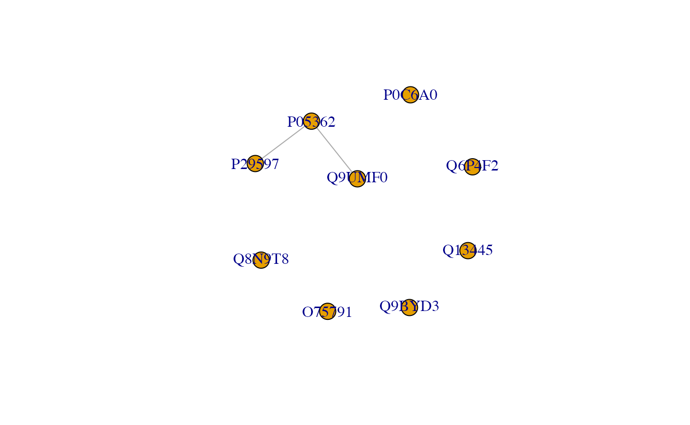

case-1-pleiotropy.RmdThis RMarkdown document demonstrates how key elements from the notebook for case study 1 in the EpiGraphDB paper can be achieved using the R package. For detailed explanations of the case study please refer to the paper or the case study notebook.
Mendelian randomization (MR), a technique to evaluate the causal role of modifiable exposures on a health outcome using a set of genetic instruments, tacitly assumes that a genetic variant (e.g. SNP) is only related to an outcome of interest through an exposure (i.e. the “exclusion restriction criterion”). Horizontal pleiotropy, where a SNP is associated with multiple phenotypes independently of the exposure of interest, potentially violates this assumption delivering misleading conclusions. In contrast, vertical pleiotropy, where a SNP is associated with multiple phenotypes on the same biological pathway, does not violate this assumption.
Here, we use external evidence on biological pathways and protein-protein interactions to assess the pleiotropic profile for a genetic variant based on the genes (and proteins) with which that variant is associated. In a graph representation, we will show that:
This case study goes as follows:
library("magrittr") library("dplyr") #> #> Attaching package: 'dplyr' #> The following objects are masked from 'package:stats': #> #> filter, lag #> The following objects are masked from 'package:base': #> #> intersect, setdiff, setequal, union library("purrr") #> #> Attaching package: 'purrr' #> The following object is masked from 'package:magrittr': #> #> set_names library("glue") #> #> Attaching package: 'glue' #> The following object is masked from 'package:dplyr': #> #> collapse library("igraph") #> #> Attaching package: 'igraph' #> The following objects are masked from 'package:purrr': #> #> compose, simplify #> The following objects are masked from 'package:dplyr': #> #> as_data_frame, groups, union #> The following objects are masked from 'package:stats': #> #> decompose, spectrum #> The following object is masked from 'package:base': #> #> union library("epigraphdb") #> EpiGraphDB v0.3 #> #> Web API: https://api.epigraphdb.org #> #> To turn off this message, use #> suppressPackageStartupMessages({library("epigraphdb")})
Here we configure the parameters used in the case study example. In this example we will look at the variant rs12720356, a SNP located in chromosome 19 that has been associated with Crohn’s disease and psoriasis.**
SNP <- "rs12720356" GENELIST <- c("ZGLP1", "FDX1L", "MRPL4", "ICAM5", "TYK2", "GRAP2", "KRI1", "TMED1", "ICAM1") PPI_N_INTERMEDIATE_PROTEINS <- 1
The first step of the analysis is to map each of these genes to their protein product.
get_gene_protein <- function(genelist) { endpoint <- "/mappings/gene-to-protein" params <- list( gene_name_list = genelist %>% I() ) r <- query_epigraphdb( route = endpoint, params = params, mode = "table", method = "POST" ) protein_df <- r if (nrow(protein_df) > 0) { res_df <- protein_df %>% select(protein_name = `gene.name`, uniprot_id = `protein.uniprot_id`) } else { res_df <- tibble() %>% set_names(c("protein_name", "uniprot_id")) } res_df } gene_protein_df <- get_gene_protein(genelist = GENELIST) gene_protein_df #> # A tibble: 9 x 2 #> protein_name uniprot_id #> <chr> <chr> #> 1 TMED1 Q13445 #> 2 MRPL4 Q9BYD3 #> 3 TYK2 P29597 #> 4 KRI1 Q8N9T8 #> 5 FDX1L Q6P4F2 #> 6 GRAP2 O75791 #> 7 ICAM1 P05362 #> 8 ICAM5 Q9UMF0 #> 9 ZGLP1 P0C6A0
For each protein we retrieve the pathways they are involved in.
get_protein_pathway <- function(gene_protein_df) { endpoint <- "/protein/in-pathway" params <- list( uniprot_id_list = gene_protein_df %>% pull(`uniprot_id`) %>% I() ) df <- query_epigraphdb(route = endpoint, params = params, mode = "table", method = "POST") if (nrow(df) > 0) { res_df <- gene_protein_df %>% select(`uniprot_id`) %>% left_join(df, by = c("uniprot_id")) } else { res_df <- gene_protein_df %>% select(`uniprot_id`) %>% mutate(pathway_count = NA_integer_, pathway_reactome_id = NA_character_) } res_df <- res_df %>% mutate( pathway_count = ifelse(is.na(pathway_count), 0L, as.integer(pathway_count)), pathway_reactome_id = ifelse(is.na(pathway_reactome_id), c(), pathway_reactome_id) ) res_df } pathway_df <- get_protein_pathway(gene_protein_df = gene_protein_df) pathway_df #> # A tibble: 9 x 3 #> uniprot_id pathway_count pathway_reactome_id #> <chr> <int> <list> #> 1 Q13445 0 <NULL> #> 2 Q9BYD3 0 <NULL> #> 3 P29597 3 <chr [3]> #> 4 Q8N9T8 0 <NULL> #> 5 Q6P4F2 1 <chr [1]> #> 6 O75791 3 <chr [3]> #> 7 P05362 5 <chr [5]> #> 8 Q9UMF0 2 <chr [2]> #> 9 P0C6A0 0 <NULL>
Now for each pair of proteins we match the pathways they have in common.
get_shared_pathway <- function(pathway_df) { # For the protein-pathway data # Get protein-protein permutations where they share pathways per_permutation <- function(pathway_df, permutation) { df <- pathway_df %>% filter(uniprot_id %in% permutation) primary_pathway <- pathway_df %>% filter(uniprot_id == permutation[1]) %>% pull(pathway_reactome_id) %>% unlist() assoc_pathway <- pathway_df %>% filter(uniprot_id == permutation[2]) %>% pull(pathway_reactome_id) %>% unlist() intersect(primary_pathway, assoc_pathway) } pairwise_permutations <- pathway_df %>% pull(`uniprot_id`) %>% gtools::permutations(n = length(.), r = 2, v = .) shared_pathway_df <- tibble( protein = pairwise_permutations[, 1], assoc_protein = pairwise_permutations[, 2] ) %>% mutate( shared_pathway = map2(`protein`, `assoc_protein`, function(x, y) { per_permutation(pathway_df = pathway_df, permutation = c(x, y)) }), combination = map2_chr(`protein`, `assoc_protein`, function(x, y) { comb <- sort(c(x, y)) paste(comb, collapse = ",") }), count = map_int(`shared_pathway`, function(x) na.omit(x) %>% length()), connected = count > 0 ) shared_pathway_df } shared_pathway_df <- get_shared_pathway(pathway_df) n_pairs <- length(shared_pathway_df %>% filter(count > 0)) print(glue::glue("Num. shared_pathway pairs: {n_pairs}")) #> Num. shared_pathway pairs: 6 shared_pathway_df %>% arrange(desc(count)) #> # A tibble: 72 x 6 #> protein assoc_protein shared_pathway combination count connected #> <chr> <chr> <list> <chr> <int> <lgl> #> 1 P05362 Q9UMF0 <chr [2]> P05362,Q9UMF0 2 TRUE #> 2 Q9UMF0 P05362 <chr [2]> P05362,Q9UMF0 2 TRUE #> 3 P05362 P29597 <chr [1]> P05362,P29597 1 TRUE #> 4 P29597 P05362 <chr [1]> P05362,P29597 1 TRUE #> 5 O75791 P05362 <chr [0]> O75791,P05362 0 FALSE #> 6 O75791 P0C6A0 <NULL> O75791,P0C6A0 0 FALSE #> 7 O75791 P29597 <chr [0]> O75791,P29597 0 FALSE #> 8 O75791 Q13445 <NULL> O75791,Q13445 0 FALSE #> 9 O75791 Q6P4F2 <chr [0]> O75791,Q6P4F2 0 FALSE #> 10 O75791 Q8N9T8 <NULL> O75791,Q8N9T8 0 FALSE #> # … with 62 more rows
We can further query EpiGraphDB regarding the detailed pathway information using GET /meta/nodes/Pathway/search.
get_pathway_info <- function(reactome_id) { endpoint <- "/meta/nodes/Pathway/search" params <- list(id = reactome_id) df <- query_epigraphdb(route = endpoint, params = params, mode = "table") df } pathway <- shared_pathway_df %>% pull(shared_pathway) %>% unlist() %>% unique() pathway_info <- pathway %>% map_df(get_pathway_info) pathway_info %>% print() #> # A tibble: 3 x 3 #> node.in_disease node.name node.reactome_id #> <chr> <chr> <chr> #> 1 FALSE Interleukin-4 and Interleukin-13 signaling R-HSA-6785807 #> 2 FALSE Integrin cell surface interactions R-HSA-216083 #> 3 FALSE Immunoregulatory interactions between a Lymp… R-HSA-198933
In order to extract protein groups from the shared pathways, the last step for this query is to convert the shared pathway data into a graph where
We then count the number of nodes in each connected community and plot the graph.
protein_df_to_graph <- function(df) { df_connected <- df %>% filter(connected) %>% distinct(`combination`, .keep_all = TRUE) nodes <- df %>% pull(protein) %>% unique() graph <- igraph::graph_from_data_frame( df_connected, directed = FALSE, vertices = nodes ) graph$layout <- igraph::layout_with_kk graph } graph_to_protein_groups <- function(graph) { graph %>% igraph::components() %>% igraph::groups() %>% tibble(group_member = .) %>% mutate(group_size = map_int(`group_member`, length)) %>% arrange(desc(group_size)) } pathway_protein_graph <- shared_pathway_df %>% protein_df_to_graph() pathway_protein_groups <- pathway_protein_graph %>% graph_to_protein_groups() pathway_protein_groups %>% str() #> tibble [7 × 2] (S3: tbl_df/tbl/data.frame) #> $ group_member:List of 7 #> ..$ 2: chr [1:3] "P05362" "P29597" "Q9UMF0" #> ..$ 1: chr "O75791" #> ..$ 3: chr "P0C6A0" #> ..$ 4: chr "Q13445" #> ..$ 5: chr "Q6P4F2" #> ..$ 6: chr "Q8N9T8" #> ..$ 7: chr "Q9BYD3" #> ..- attr(*, "dim")= int 7 #> ..- attr(*, "dimnames")=List of 1 #> .. ..$ : chr [1:7] "2" "1" "3" "4" ... #> $ group_size : Named int [1:7] 3 1 1 1 1 1 1 #> ..- attr(*, "names")= chr [1:7] "2" "1" "3" "4" ...
plot(pathway_protein_graph)

sessionInfo
sessionInfo() #> R version 4.0.0 (2020-04-24) #> Platform: x86_64-pc-linux-gnu (64-bit) #> Running under: Ubuntu 16.04.6 LTS #> #> Matrix products: default #> BLAS: /home/travis/R-bin/lib/R/lib/libRblas.so #> LAPACK: /home/travis/R-bin/lib/R/lib/libRlapack.so #> #> locale: #> [1] LC_CTYPE=en_US.UTF-8 LC_NUMERIC=C #> [3] LC_TIME=en_US.UTF-8 LC_COLLATE=en_US.UTF-8 #> [5] LC_MONETARY=en_US.UTF-8 LC_MESSAGES=en_US.UTF-8 #> [7] LC_PAPER=en_US.UTF-8 LC_NAME=C #> [9] LC_ADDRESS=C LC_TELEPHONE=C #> [11] LC_MEASUREMENT=en_US.UTF-8 LC_IDENTIFICATION=C #> #> attached base packages: #> [1] stats graphics grDevices utils datasets methods base #> #> other attached packages: #> [1] epigraphdb_0.2 igraph_1.2.5 glue_1.4.1 purrr_0.3.4 dplyr_1.0.0 #> [6] magrittr_1.5 #> #> loaded via a namespace (and not attached): #> [1] knitr_1.29 tidyselect_1.1.0 R6_2.4.1 rlang_0.4.7 #> [5] fansi_0.4.1 httr_1.4.2 stringr_1.4.0 tools_4.0.0 #> [9] xfun_0.16 utf8_1.1.4 cli_2.0.2 gtools_3.8.2 #> [13] htmltools_0.5.0 ellipsis_0.3.1 yaml_2.2.1 assertthat_0.2.1 #> [17] rprojroot_1.3-2 digest_0.6.25 tibble_3.0.3 lifecycle_0.2.0 #> [21] pkgdown_1.5.1.9000 crayon_1.3.4 vctrs_0.3.2 fs_1.4.2 #> [25] curl_4.3 memoise_1.1.0 evaluate_0.14 rmarkdown_2.3.3 #> [29] stringi_1.4.6 compiler_4.0.0 pillar_1.4.6 desc_1.2.0 #> [33] generics_0.0.2 backports_1.1.8 jsonlite_1.7.0 pkgconfig_2.0.3